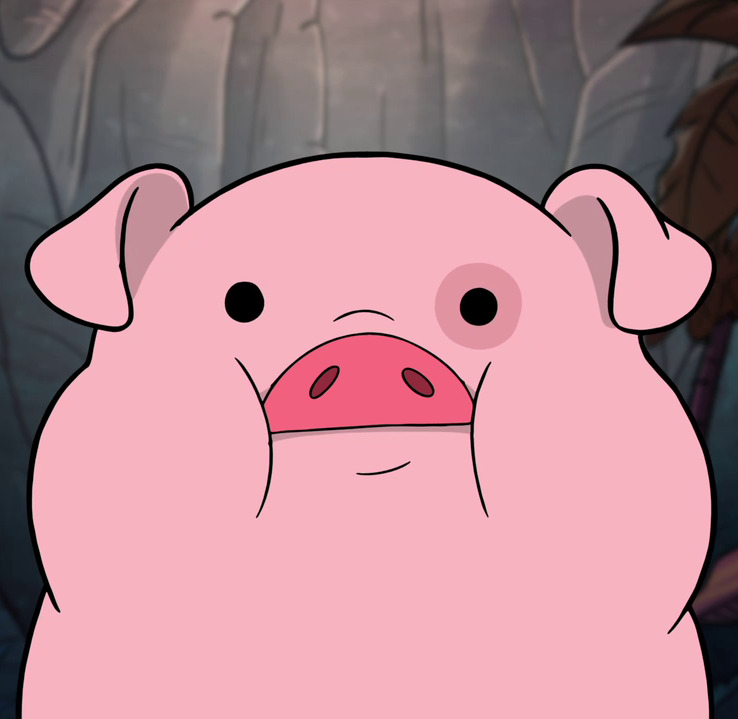

Hello
I am Aloysius
I'm a mathematician who pretends to be able to do programming. I work at the Office for National Statistics but all views are purely my own. I like haskell, julia, lisps and nixos. I spend too much of my own personal time trying to make my xmonad configuration pretty.
I (try to) maintain a series of posts of interesting things I have read. I call it The Fishman Diaries. Please feel free to give it a follow or contribute.